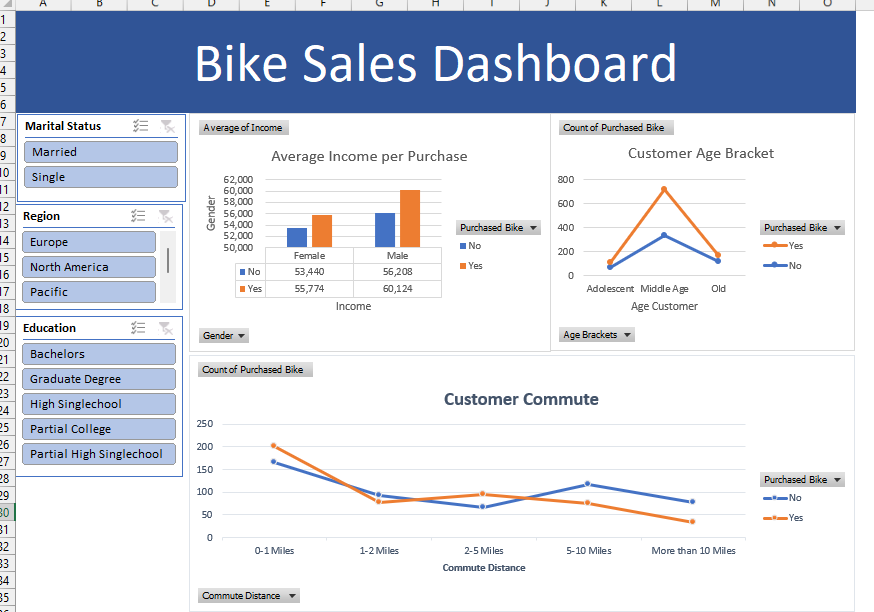

Bike Sales Dashboard

The Bike Sales dashboard simplifies bicycle sales analysis using Excel's dashboard technique. It presents three main graphics: first, the average income per purchase for males and females; second, the age distribution of customers (adolescent, middle-aged, and elderly); and third, the distance traveled by customers.
Easy to filter the dashboard using the slicing feature on the left. This allows you to view data based on marital status, region, and education level. With its straightforward design and customizable metrics, this dashboard makes analyzing bike sales a breeze.